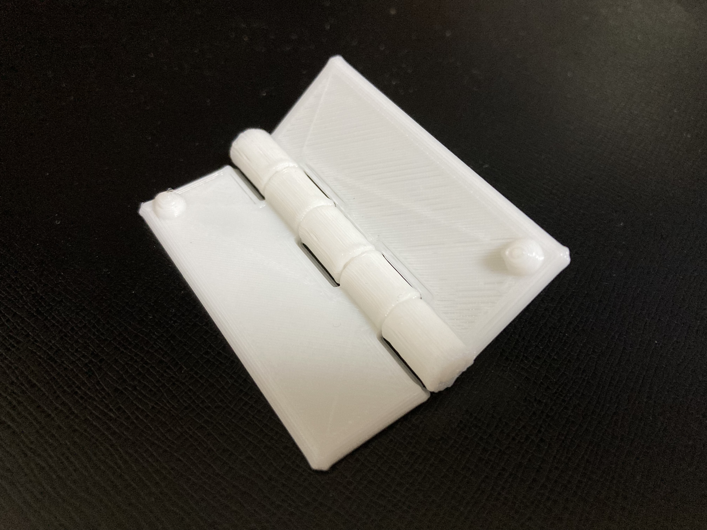
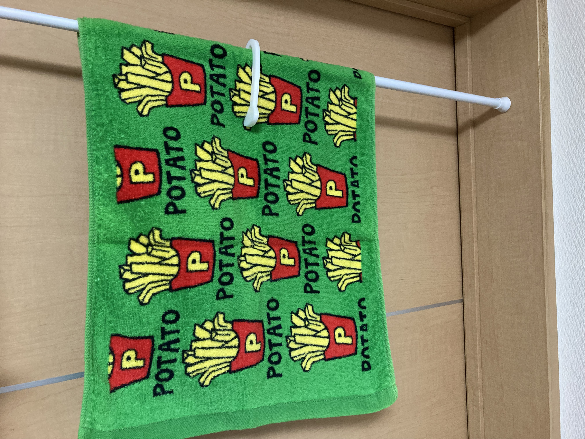

今回は４つ作ってみた。
＜試作品たち＞
すべてサポートなしで印刷可能
これらはすべて厚さ10mmで印刷したが
硬すぎて開くことができなかったので失敗
もう１つのこれは時に問題なく成功

つがい機構がサポートなしで問題なく印刷できることがわかったので次は機能を付け加える
失敗した３つについては、悪い点を解消するためすぐにモデリングデータを直して再度印刷した
＜修正版＞
今回は厚さ5mmで印刷

シンプルなデザイン。試作品をみて要らなさそうだった突起を削った。これはもう使えそう
紙や食品の袋等をはさむ用に作ったがそれには少し大きいと言う印象
残念ながら用途不明
＜来週へ向けて＞
・一つ目のデザインに統一して、様々な用途のモデルを作る
＜使ってみる＞

突っ張り棒くらいの細さだと使いやすい。太いと使えない
しっかりはさめてます